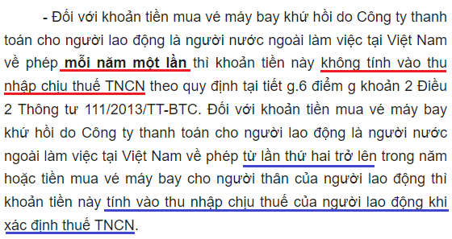
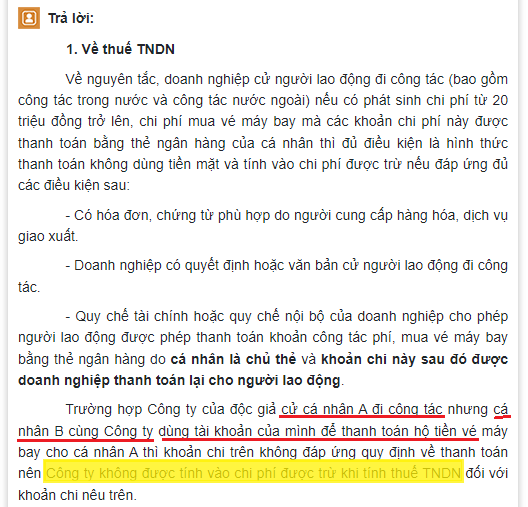

Chi phí vé máy bay đi công tác cho nhân viên, cho chuyên gia nước ngoài hợp lệ thì cần những gì? Kế toán Diệu Tâm xin trích các quy định về chi phí vé may bay hợp lệ khi tính thuế TNDN.
I. Căn cứ Khoản 1 Điều 9 Nghị định 320/2025/NĐ-CP (có hiệu lực từ ngày 15/15/2025)
Điều 9. Các khoản chi được trừ khi xác định thu nhập chịu thuế
1. Trừ các khoản chi không được trừ quy định tại Điều 10 của Nghị định này, doanh nghiệp được trừ các khoản chi khi xác định thu nhập chịu thuế nếu đáp ứng đủ điều kiện tại các điểm a, b và c sau đây:
a) Khoản chi thực tế phát sinh liên quan đến hoạt động sản xuất, kinh doanh của doanh nghiệp, bao gồm cả khoản chi phí bổ sung được trừ theo tỷ lệ phần trăm tính trên chi phí thực tế phát sinh trong kỳ tính thuế liên quan đến hoạt động nghiên cứu và phát triển của doanh nghiệp;
b) Khoản chi có đủ hóa đơn, chứng từ theo quy định của pháp luật.
Đối với các trường hợp: Mua sản phẩm là nông, lâm, thủy sản của người sản xuất, đánh bắt trực tiếp bán ra; mua sản phẩm thủ công làm bằng đay, cói, tre, nứa, lá, sõng, mây, rơm, vỏ dừa, sọ dừa hoặc nguyên liệu tận dụng từ sản phẩm nông nghiệp của người sản xuất thủ công trực tiếp bán ra; mua phế liệu của người trực tiếp thu nhặt; mua đồ dùng, tài sản của hộ gia đình, cá nhân trực tiếp bán ra; mua hàng hóa, dịch vụ của cá nhân, hộ kinh doanh (không bao gồm các trường hợp nêu trên) có mức doanh thu dưới ngưỡng doanh thu chịu thuế giá trị gia tăng phải có chứng từ chi trả tiền theo quy định của pháp luật về kế toán, hóa đơn, chứng từ cho người bán (đối với trường hợp giá trị mua hàng hóa, dịch vụ trong ngày của từng hộ, cá nhân từ 05 triệu đồng trở lên phải thanh toán không dùng tiền mặt) và Bảng kê thu mua hàng hóa, dịch vụ do người đại diện theo pháp luật hoặc người được ủy quyền của doanh nghiệp ký và chịu trách nhiệm;
c) Khoản chi có chứng từ thanh toán không dùng tiền mặt đối với trường hợp mua hàng hóa, dịch vụ và các khoản thanh toán khác từng lần có giá trị từ 05 triệu đồng trở lên. Chứng từ thanh toán không dùng tiền mặt thực hiện theo quy định của các văn bản pháp luật về thuế giá trị gia tăng.
II. Căn cứ Điểm h khoản 6 điều 10 Nghị định 320/2025/NĐ-CP (có hiệu lực từ ngày 15/15/2025)
- Chi phụ cấp cho người lao động đi công tác, chi phí đi lại và tiền thuê chỗ ở cho người lao động đi công tác nếu có đầy đủ hóa đơn, chứng từ được tính vào chi phí được trừ khi xác định thu nhập chịu thuế. Trường hợp doanh nghiệp cử người lao động đi công tác (bao gồm công tác trong nước và công tác nước ngoài) nếu có phát sinh chi phí từ 05 triệu đồng trở lên mà các khoản chi phí này được thanh toán bởi cá nhân bằng dịch vụ thanh toán không dùng tiền mặt thì xác định đủ điều kiện là hình thức thanh toán không dùng tiền mặt của doanh nghiệp và tính vào chi phí được trừ nếu đáp ứng đủ các điều kiện sau:
+ Có hóa đơn, chứng từ theo quy định của pháp luật về kế toán, pháp luật về hóa đơn, chứng từ do người cung cấp hàng hóa, dịch vụ giao xuất
+ Doanh nghiệp có quyết định hoặc văn bản cử người lao động đi công tác; quy chế tài chính hoặc quy chế nội bộ của doanh nghiệp cho phép người lao động được phép thanh toán khoản công tác phí, mua vé phương tiện đi lại bởi cá nhân bằng dịch vụ thanh toán không dùng tiền mặt và khoản chi này sau đó được doanh nghiệp thanh toán lại cho người lao động.
Trường hợp doanh nghiệp có khoán tiền đi lại, tiền ở, phụ cấp cho người lao động đi công tác và thực hiện đúng theo quy chế tài chính hoặc quy chế nội bộ của doanh nghiệp thì được tính vào chi phí được trừ khoản chi khoán tiền đi lại, tiền ở, tiền phụ cấp;
III. Theo Điều 4 Thông tư số 96/2015/TT-BTC ngày 26/6/2015 (còn hiệu lực) của Bộ Tài Chính hướng dẫn về thuế thu nhập doanh nghiệp (TNDN):
Trường hợp doanh nghiệp có mua vé máy bay qua website thương mại điện tử cho người lao động đi công tác để phục vụ hoạt động sản xuất kinh doanh của doanh nghiệp thì chứng từ làm căn cứ để tính vào chi phí được trừ là vé máy bay điện tử, thẻ lên máy bay (boarding pass) và chứng từ thanh toán không dùng tiền mặt của doanh nghiệp có cá nhân tham gia hành trình vận chuyển.
Trường hợp doanh nghiệp không thu hồi được thẻ lên máy bay của người lao động thì chứng từ làm căn cứ để tính vào chi phí được trừ là vé máy bay điện tử, quyết định hoặc văn bản cử người lao động đi công tác và chứng từ thanh toán không dùng tiền mặt của doanh nghiệp có cá nhân tham gia hành trình vận chuyển.
------------------------------------------------------------------------------------------
1. Nếu DN bạn mua vé máy bay trực tiếp tại Đại lý, quầy, thì cần:
- Vé máy bay
- Chứng từ thanh toán (Nếu giá trị từ 05 triệu trở lên phải chuyển khoản)
2. Nếu DN bạn mua vé máy bay qua website thương mại điện tử:
- Thẻ lên máy bay (boarding pass) (Nếu không thu hồi được thẻ lên máy bay thì cần: Vé máy bay điện tử, Quyết định cử đi công tác, chứng từ thanh toán không dùng tiền mặt)
- Chứng từ thanh toán không dùng tiền mặt.
3. Nếu DN giao KHOÁN cho cá nhân tự mua vé máy bay, thanh toán bằng thẻ ATM hoặc thẻ tín dụng mang tên cá nhân, sau đó về thanh toán lại với DN nếu doanh nghiệp có đủ hồ sơ, chứng từ chứng minh khoản chi phí này phục vụ cho hoạt động sản xuất kinh doanh của doanh nghiệp gồm:
- Vé máy bay (Vì mua qua website nên vé máy bay điện tử là hoá đơn)
- Thẻ lên máy bay.
- Các giấy tờ liên quan đến việc điều động người lao động đi công tác có xác nhận của DN (Quyết định cử đi công tác).
- Quy định của DN cho phép người lao động thanh toán công tác phí bằng thẻ cá nhân do người lao động được cử đi công tác là chủ thẻ và thanh toán lại với DN.
- Chứng từ thanh toán của DN cho cá nhân mua vé (Chuyển từ TK DN sang TK cá nhân)
- Chứng từ thanh toán không dùng tiền mặt của cá nhân.
Chi tiết xem thêm tại đây: Chi phí mua hàng thanh toán qua thẻ cá nhân
------------------------------------------------------------------------------------------
Chi phí vé máy bay cho chuyên gia nước ngoài:
Công văn số 18791/CT-TTHT ngày 06/11/2017 của Cục Thuế tỉnh Bình Dương:
"Căn cứ các quy định nêu trên, trường hợp Công ty TNHH Synthite Việt Nam để phục vụ cho hoạt động kinh doanh có mời một số chuyên gia nước ngoài sang Việt Nam làm việc và theo thỏa thuận tại hợp đồng của Công ty TNHH Synthite Việt Nam phải thanh toán chi phí về nước thăm gia đình mỗi năm 4 lần, bao gồm chi phí tiền vé máy bay, chi phí đi lại, ăn, uống… thì về thuế TNCN, khoản tiền mua vé máy bay khứ hồi cho chuyên gia nước ngoài về phép 1 lần/1 năm không tính vào thu nhập chịu thuế TNCN của chuyên gia nước ngoài.
Đối với khoản tiền mua vé máy bay khứ hồi cho chuyên gia nước ngoài về phép vượt quá 1 lần/1 năm và chi phí đi lại, ăn uống phục vụ chuyên gia nước ngoài về phép thì được tính vào thu nhập chịu thuế TNCN của chuyên gia nước ngoài. Về thuế TNDN, khoản tiền mua vé máy bay khứ hồi, chi phí đi lại, ăn uống phục vụ chuyên gia nước ngoài về phép do Công ty TNHH Synthite Việt Nam chi trả quy định trong hợp đồng, phù hợp với quy định của Bộ Luật Lao động được tính vào chi phí được trừ khi xác định thu nhập chịu thuế TNDN."
Công văn Số 8621/CTDON-TTHT của Cục thuế tỉnh Đồng Nai ngày 14/7/2023 cũng có hướng dẫn tương tự

Công văn số 817/CT-TTHT ngày 07/01/2019 của Cục Thuế Tp Hà Nội:
"2. Về thuế thu nhập doanh nghiệp: Trường hợp Công ty tại Việt Nam phát sinh các khoản chi phí ăn ở, đi lại cho cán bộ, chuyên gia thuộc tập đoàn liên doanh với Công ty ở nước ngoài do Công ty mời sang Việt Nam để hỗ trợ phục vụ cho hoạt động sản xuất, kinh doanh của Công ty, trong thỏa thuận giữa Công ty tại Việt Nam và tập đoàn liên doanh với Công ty ở nước ngoài có quy định Công ty tại Việt Nam chi trả chi phí này cho các cán bộ, chuyên gia thuộc tập đoàn liên doanh với Công ty ở nước ngoài trong thời gian công tác ở Việt Nam thì khoản chi này được hạch toán vào chi phí được trừ khi tính thu nhập chịu thuế TNDN nếu đáp ứng các quy định tại Điều 4 Thông tư 96/2015/TT-BTC của Bộ Tài chính nêu trên."
-------------------------------------------------------------------------------------------
Chi phí mua vé máy bay các hãng nước ngoài:
Theo Công văn 8199/CT-TTHT ngày 24/08/2017 của Cục thuế Thành phố Hồ Chí Minh:
Xem thêm: Phương pháp tính thuế nhà thầu nước ngoài
Về chi phí đi công tác ở nước ngoài như: Tiền khách sạn, ăn uống,… của nhân viên nếu Công ty đáp ứng điều kiện quy định tại Điều 4 Thông tư số 96/2015/TT- BTC thì Công ty được tính vào chi phí được trừ khi tính thuế TNDN."
Chú ý: Các hoá đơn, chứng từ phát sinh tại nước ngoài phải phù hợp với quy định nước sở tại và phải được dịch ra Tiếng Việt.
------------------------------------------------------------------------------
Chi phí mua vé máy bay cho giám đốc Cty TNHH 1 TV:
Theo Công văn 5421/CT-TTHT ngày 16/02/2017 của cục thuế TP Hà Nội:
- Về thuế TNCN: khoản lợi ích mà chủ Công ty nhận được nêu trên không tính vào thu nhập chịu thuế thu nhập cá nhân của chủ Công ty.
------------------------------------------------------------------------------
Chi phí mua vé máy khi người khác thanh toán hộ:

Nguồn: https://www.mof.gov.vn/hoidapcstc/home/cthoidap/114790
---------------------------------------------------------------------------------------------
Chi tiết xem thêm: Chi phí đi công tác hợp lý
Kế toán Diệu Tâm xin chúc các bạn thành công! Các bạn muốn học thực hành kế toán thực tế, thực hành hạch toán, hoàn thiện sổ sách, lập BCTC, kê khai thuế - Quyết toán thuế thì có thể tham gia; Lớp học kế toán thực hành
------------------------------------------------------------